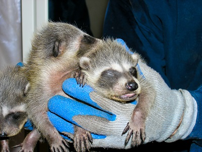

Our Latest Rescue: Baby Raccoons
Meet our latest rescues, Fizz, Bandit, and Mohawk. These three little guys were found abandoned near a home.
Welcome to Wild Rescues. Our mission is to rescue, rehabilitate, and release wildlife back into their natural environment. We are a nonprofit organization dedicated to helping injured wildlife
Our staff provides around-the-clock care for wildlife in need. We also provide long-term care for wildlife that cannot be released back into their natural environment.
Will you partner with us? We need caring volunteers to help care for out animals. You can donate, become a member, or become a sponsor. Contact is today.